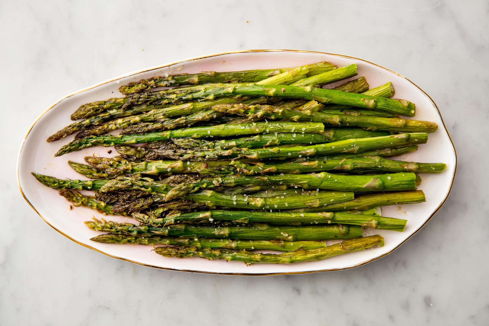

Oven-roasted asparagus

As easy as it gets
Salty and savory, the roasting method kills the natural bitterness of asparagus. Try it next to grilled fish or lamb.
Ingredients:
- 1 bunch thin asparagus spears, trimmed
- 3 tablespoons olive oil
- 1 1/2 tablespoons grated parmesan cheese(Optional)
- 1 clove garlic, minced(Optional)
- 1 teaspoon sea salt
- 1/2 teaspoon ground black pepper
- 1 talbespoon lemon juice(Optional)
- Preheat an oven to 425 degreed F (220 degrees C)
- Place the asparagus into a mixing bowl, and drizzle with the olive oil.
Toss to coat the spears, the sprinkle with parmesan chese, garlic, salt, and pepper.
Arrange the asparagus onto a baking sheet in a single layer.
- Bake in the preheated oven until just tender, 12 to 15 minutes depending on thickness.
Sprinkle with lemon juice just before serving.
back to recipes list